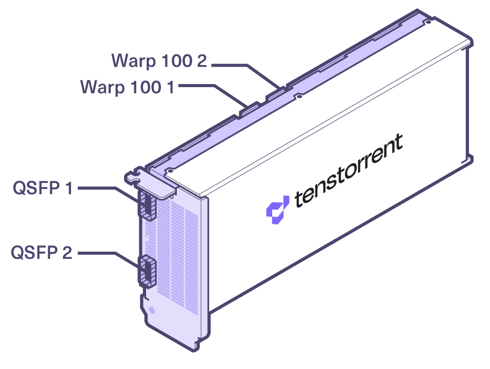

Specifications/Requirements
Wormhole™ Tensix Processor
The Wormhole™ n150s and n300s Tensix Processor add-in boards are built using the Tenstorrent Wormhole™ Tensix Processor:
Tensix Core Count: 80
SRAM: 120MB (1.5MB per Tensix Core)
Memory: 12GB GDDR6, 192-bit memory bus
n150s/n300s/n300d Comparison Table
NOTE: The n150s and n300s add-in cards come with a heatsink for passive cooling in systems which can provide sufficient forced airflow to the card. If your system does not (for example, a desktop workstation), installing the Active Cooling Kit is required. If the card isn’t sufficiently cooled, performance will be substantially reduced to stay in a safe operating temperature range and you risk damage to the card.
Specification |
n150s |
n300s |
|---|---|---|
Part Number |
TC-02001 |
TC-02003 |
Wormhole™ ASICs |
1 |
2 |
Tensix Cores |
72 |
128 (64 per ASIC) |
AI Clock |
1 GHz |
1 GHz |
SRAM |
108MB |
192MB (96MB per ASIC) |
Memory |
12GB GDDR6 |
24GB GDDR6 |
Memory Speed |
12 GT/sec |
12 GT/sec |
Memory Bandwidth |
288 GB/sec |
576 GB/sec |
TeraFLOPs (FP8) |
262 |
466 |
TeraFLOPs (FP16) |
74 |
131 |
TeraFLOPs (BFP8) |
148 |
262 |
TBP (Total Board Power) |
160W |
300W |
External Power |
1x 4+4-pin EPS12V |
1x 4+4-pin EPS12V |
Connectivity |
2x Warp 100 Bridge |
2x Warp 100 Bridge |
Internal Interconnect |
N/A |
400GbE |
System Interface |
PCI Express 4.0 x16 |
PCI Express 4.0 x16 |
Cooling |
Passive |
Passive |
Dimensions (w/o Cooling Kit) (WxDxH) |
36mm x 254mm x 111mm |
36mm x 254mm x 111mm |
Dimensions (w/ Cooling Kit) (WxDxH) |
36mm x 393.5mm x 114mm |
36mm x 393.5mm x 114mm |

n150s/n300s without Active Cooling Kit
Connectivity
The n150s and n300s include two different methods for interconnecting cards.

The Warp 100 notches are for attaching internal Warp 100 bridges between n150s and n300s cards.
The two QSFP-DD ports support QSFP-DD 400GbE connectivity between cards and/or the Galaxy Wormhole 4U Server.
Data Precision Formats
The n150/n300 support the following data precision formats:
Format |
Bit Depth |
|---|---|
Floating point |
FP8, FP16, BF16 |
Block floating point |
BFP2, BFP4, BFP8 |
Integer |
INT8 |
Unsigned Integer |
UINT8 |
TensorFloat |
TF32 |
Vector |
VTF19, VFP32 |
Minimum System Requirements
Part |
Requirement |
|---|---|
CPU |
x86_64 architecture* |
Motherboard |
PCI Express 4.0 x16 slot |
Memory |
64 GB |
Storage |
100 GB (≥2TB recommended) |
Power Connectors |
4+4-pin EPS12V |
Total Board Power |
Up to 160W (n150s) / 300W (n300s/n300d) |
Operating Temperature Range (Die) |
0C - 75C |
Operating System |
Ubuntu version 20.04 (Focal Fossa) ** |
Internet Connection |
Required for driver and stack installation. |
** CPU core count and number of sockets will depend on the amount of host preprocessing and post-processing required before and after the accelerator processing.*
**To check your version, type cat /etc/os-release.
Environment Specifications
The Wormhole™ n150s and n300s Tensix Processor add-in boards are designed to meet these environmental specifications:
Specification |
Requirement |
|---|---|
Operating Temperature Range |
10°C/50°F - 35°C/95°F |
Storage Temperature Range |
-40°C/-40°F - 75°C/167°F |
Elevation |
-5 ft. to 10,000 ft. |
Air Flow (without Active Cooling Kit) |
≥30 CFM @ up to 35°C/95°F |